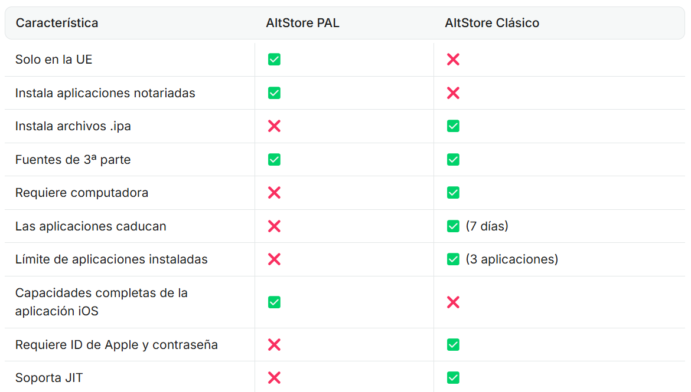

⚔️ AltStore PAL vs Classic: Elige Tu Estilo

- AltStore PAL (UE):
Sin PC, apps notarizadas, pero sin .ipa
- AltStore Classic (Global):
Necesitas PC, pero instalas cualquier .ipa
📱 Método 1: AltStore PAL (Solo UE)
- Abre Safari y ve a altstore.io
- Descarga AltStore PAL (iOS 17.4+ requerido)
- Ve a Ajustes > General > Gestión de Dispositivos y confía en AltStore
💡 Si tienes errores, reinicia el iPhone después de instalar.

💻 Método 2: AltStore Classic (Global)
- Descarga AltServer en tu PC/Mac desde altstore.io
- Conecta el iPhone por USB y activa Wi-Fi Sync en iTunes/Finder
- Haz clic en el icono de AltServer en la barra de menú y elige Install AltStore
🚨 ¡Actualiza AltServer cada 2 semanas para evitar revocaciones!